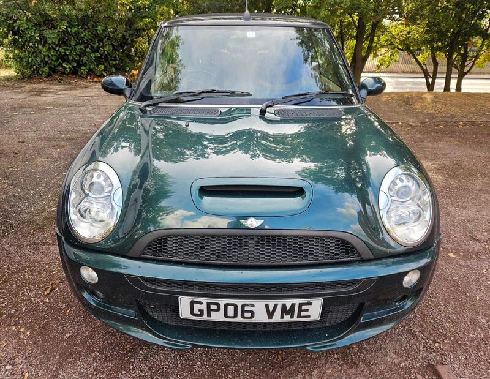
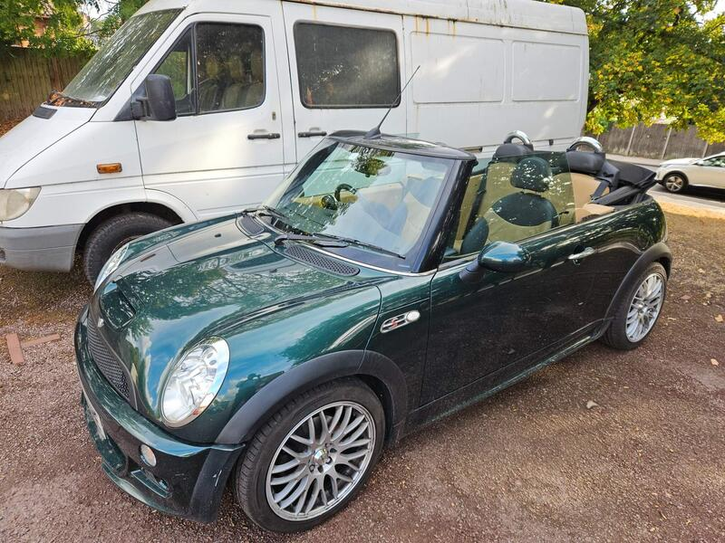
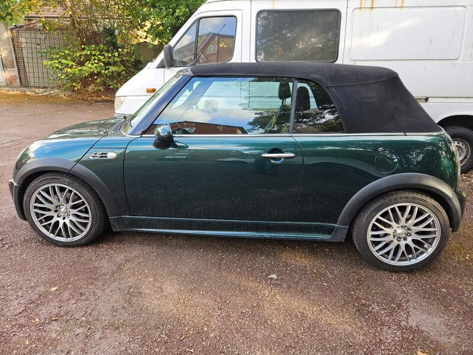
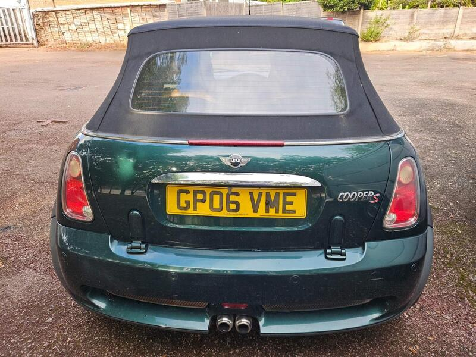

Seller photos from the AutoTrader ad.
MINI Convertible 1.6 Cooper S
The best hot-hatch convertible here: manual, supercharged and documented.
Key facts
| Price | £2,499 |
|---|---|
| Year | 2006 |
| Miles | 86,558 |
| Model | MINI Convertible 1.6 Cooper S |
| Colour | Green |
| Registration | 2006 (06 reg) |
| Owners | 3 owners |
| Service history | Full |
| MOT | Aug 2027 (ad) |
| Seller | Private |
| Location | New Southgate |
| From GU7 | 36 mi (AutoTrader) |
| Checked | 13 Oct 2026 |
Why buy it
- Supercharged R52 Cooper S, 6-speed manual, BRG
- Fresh service and MOT, full service history
Things to check
Check the power-steering pump
Check the roof seals and drains
- MINI Convertible R52/R57 weak spots
Not flagged as a major issue in our sources; check for water ingress via roof drains and seals. R52 CVT auto fails (avoid); supercharged R52 power-steering pump; pre-Nov 2011 Prince timing-chain tensioners; roof hydraulics £395–495 average repair, R57 roof from ~£1,735.
Seller says (extract)
“Selling my 2006 Mini Cooper S Convertible in British Racing Green. This absolute stunner is the supercharged R52 model with the 6-speed manual gearbox. Great fun to drive, pulls well through all gears, and has just had a fresh service and full 12-month MOT completed. Key Details: - Fresh 12 Months MOT (Passed August 2026) - Recent full oil & filter service - Supercharged 1.6 engine (170 BHP) - Electric soft-top roof in full working order - Heated seats and ice cold air conditioning Honest Disclosure (Priced Accordingly): I am listing the car with full transparency so there are no surprises upon viewing: 1. Passenger Window Does Not Open: Requires a new window regulator/motor. If you smack the door it sometimes works, but this will need fixing long term. 2. Minor Leak: Typical for a Mini of this era, there is a minor oil weep. It doesn't require regular topping up. 3. Aftermarket Wheels: New alloys and tyres were fitted in January (Calibre Motion Silver Wheels and Leao Nova Force Tyres) Recent Work (can provide more than £1,000 in receipts): 1. The radiator was replaced due to a coolant leak advisory on the MOT.…”